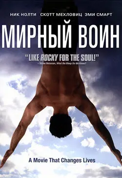
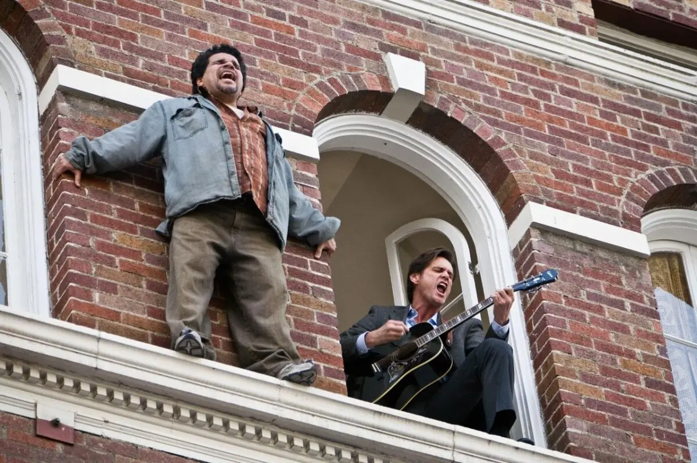
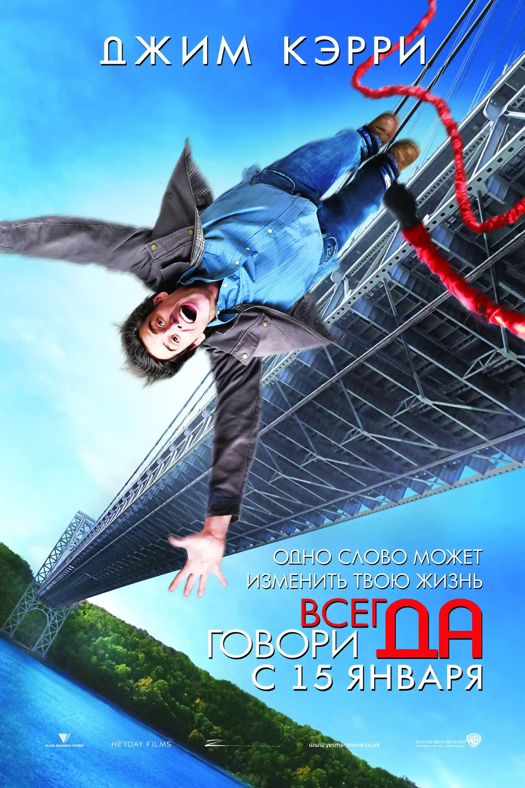
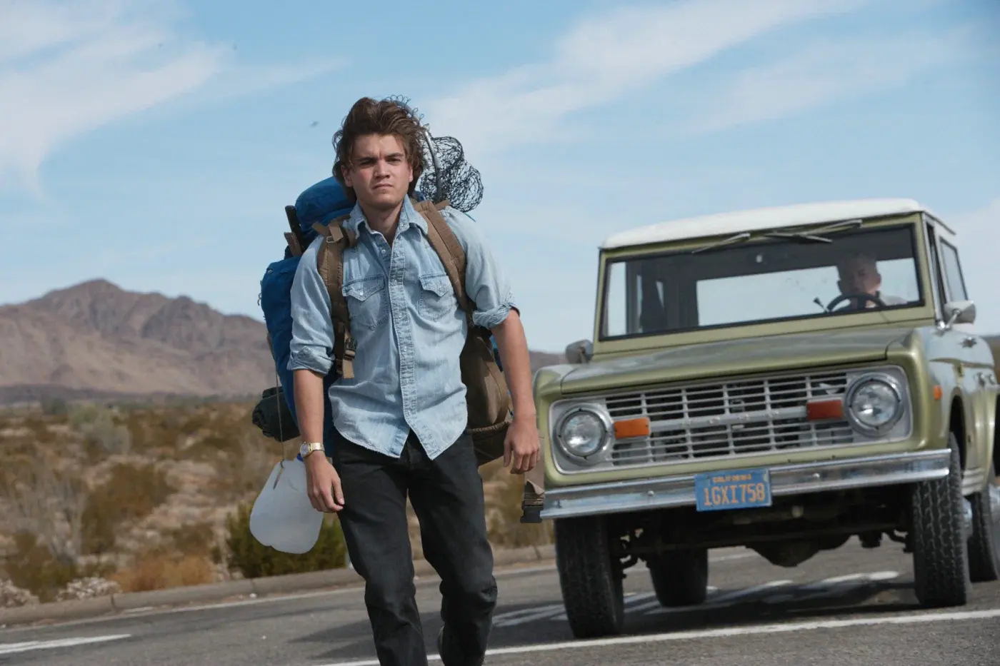
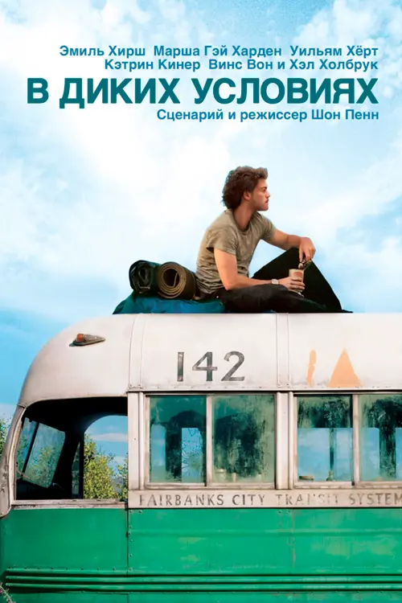
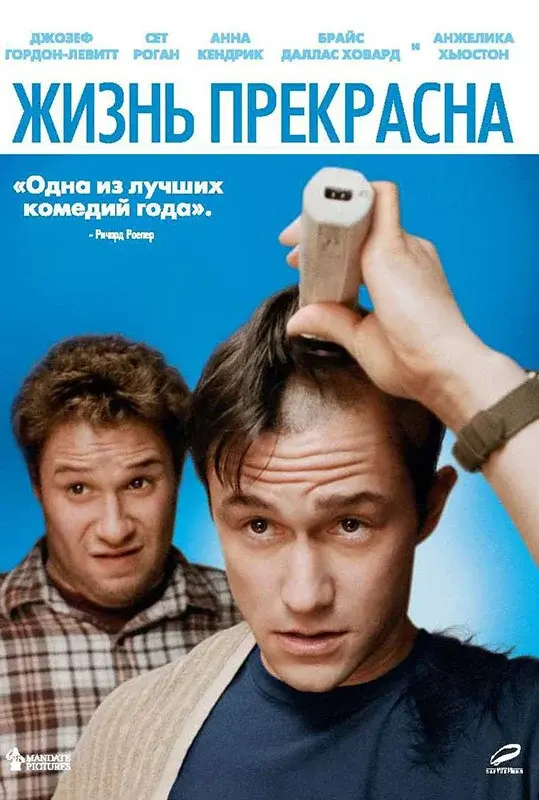
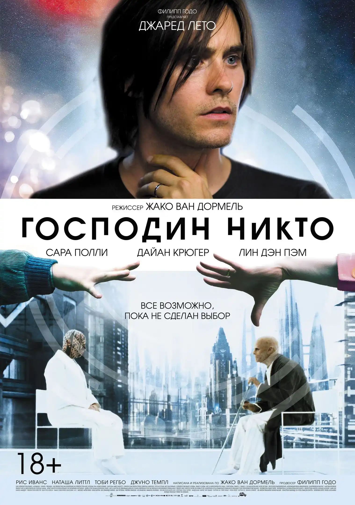

Кинотерапия
Подборка фильмов о поиске себя
Поиск себя - это не всегда про путешествия на край света, чаще это про честный разговор с собой. Если вы сейчас чувствуете, что “застряли”, или просто ищете вдохновения для перемен, то эта подборка для вас. В нашей рубрике “Кинотерапия” мы собрали для вас «золотой фонд» картин, которые буквально пересобирают ваше восприятие реальности.
-
1.мирный воин


Мирный воин
Peaceful Warrior
7.8 2006 Драма, мелодрама, спорт США, Германия
Длительность: 2 ч
Режиссер: Виктор Сальва
Актеры: Мэттью Макфейден, Дэвид Билен, Джонатан Пинкхэм
Дэн Миллмен - талантливый гимнаст колледжа, мечтающий о выступлении на Олимпийских играх. У него всё есть: награды, друзья по команде, быстрые мотоциклы, девушки и бесшабашные вечеринки. Мир Дэна переворачивается с ног на голову, когда он встречает загадочного незнакомца по имени Сократ, у которого достаточно возможностей, чтоб открыть новый мир силы и понимания. После серьёзной травмы, с помощью Сократа и эфемерной молодой девушки по имени Джой, Ден понимает, что ему много чему ещё придется научиться...
История настоящего падения и подъема, благодаря воле и желанию жить здесь и сейчас. Фильм основан на реальной истории гимнаста. Почему стоит посмотреть? Это история о восстановлении и преодолении себя помогает осознать свои силы и попробовать снова, когда не получается. Фильм "Мирный воин" очень нужный для современного общества, где погоня за успехом считается престижной. Картина показывает, стоит ли гнаться за успехом, и почему здесь ответ неоднозначный. Фильм может успокоить, если вы страдаете от выгорания или просто устали бороться за место под солнцем.
-
2.всегда говори “да”


Всегда говори «да»
Yes Man
7.8 2008 Комедия США, Великобритания
Длительность: 1 ч 44 мин
Режиссер: Пейтон Рид
Актеры: Джим Керри, Зои Дешанель, Брэдли Купер
Фильм рассказывает историю Карла Аллена (Джим Керри), нелюдимого банковского служащего, который постоянно отвечает «нет» на все предложения и приглашения. Его жизнь меняется после посещения семинара, где ему предлагают эксперимент — всегда говорить «да» на любые просьбы и возможности. Идея нестандартного подхода к жизни и возможность увидеть, как одно решение может трансформировать судьбу, делают сюжет увлекательным.
Почему стоит посмотреть? Фильм поднимает важные темы, связанные с личностным ростом и изменением отношения к жизни. Он показывает, как преодоление страха перемен, развитие самопринятия и открытость к новым возможностям могут привести к положительным изменениям. С точки зрения психологии, картина иллюстрирует, что закрытость и постоянное «нет» могут делать жизнь тесной и лишённой эмоций, а открытость — открывать новые горизонты.
-
3.в диких условиях


В диких условиях
Into the Wild
7.9 2007 Драма, приключения, биография США
Длительность: 2 ч 28 мин
Режиссер: Шон Пенн
Актеры: Эмиль Хирш, Хэл Холбрук, Марша Гэй Харден
Фильм рассказывает реальную историю Кристофера Маккэндлесса — молодого человека, который после окончания колледжа отверг материальные ценности общества, пожертвовал все сбережения на благотворительность и отправился в путешествие, чтобы жить в дикой природе. Его история затрагивает темы поиска себя, свободы, разочарования в обществе и конфликта поколений.
Почему стоит посмотреть фильм? Картина поднимает вопросы о том, что значит быть свободным, стоит ли материальный комфорт потери внутренней свободы, и как найти себя в мире. В фильме затрагиваются проблемы отношений между родителями и детьми, а также тема прощения и принятия. История Маккэндлесса заставляет зрителя задуматься о жизненных ценностях и переосмыслить свои приоритеты. «В диких условиях» — это не просто приключенческая драма, а глубокое произведение, которое предлагает зрителю задуматься о смысле существования.
-
4.жизнь прекрасна

Жизнь прекрасна
50/50
7.5 2011 Драма, мелодрама, комедия США
Длительность: 1 ч 40 мин
Режиссер: Джонатан Левин
Актеры: Джозеф Гордон-Левитт, Сет Роген, Анна Кендрик
Картина рассказывает о молодом журналисте Адаме, который узнаёт о раке и пытается найти баланс между принятием болезни и продолжением жизни. Основной посыл фильма — мысль о том, что даже в сложной ситуации не стоит сдаваться, а жизнь остаётся прекрасной, если уметь находить светлые стороны. Фильм балансирует между комедией и драмой, что позволяет зрителю и смеяться, и сопереживать героям. Юмор в картине становится способом для героя оставаться в жизни, не поддаваясь болезни.
Почему стоит посмотреть? Фильм учит дорожить жизнью и ценить каждый прожитый момент, сохранять оптимизм в самых тяжёлых ситуациях. Данная картина помогает найти в себе силы и двигаться дальше. Несмотря на серьёзную тему, фильм не выглядит депрессивным — он показывает, что жизнь продолжается, даже когда кто-то сталкивается с тяжёлой болезнью. Зритель видит, как близкие люди реагируют на ситуацию, и это делает историю более живой и близкой.
-
5.господин никто

Господин Никто
Mr. Nobody
7.9 2009 Фантастика, фэнтези, драма Бельгия, Германия, США
Длительность: 2 ч 18 мин
Режиссер: Жако Ван Дормел
Актеры: Джаред Лето, Сара Полли, Дайан Крюгер, Фам Линь Дан
Фильм представляет собой лабиринт альтернативных реальностей, где каждая развилка судьбы открывает новую жизнь. Сюжет нелинейный: Немо перескакивает между разными версиями событий — то он женат на одной женщине, то на другой; то счастлив, то несчастен; то живёт в богатстве, то бедствует. Это создаёт эффект головоломки, который заставляет задуматься о причинно-следственных связях.
Почему стоит посмотреть? Фильм заставляет нас задуматься о том, правильный ли выбор мы делали в своей жизни. Он показывает, что жизнь — это сумма наших решений. Фильм учит зрителя не бояться принимать решения: пока выбор не сделан, возможно все. «Господин Никто» — это не просто история одного человека, а размышление о жизни в целом. Фильм напоминает зрителю, что важно не зацикливаться на идее «правильного пути», а ценить сам процесс движения, ошибки, случайности и неожиданные встречи.